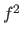

Next: てこ比：主成分分析による多変量外れ値の検出 Up: 研究法や分析法に関するメモ Previous: 一般均衡的な効果の存在
Hedges & Olkin (1985) P.101
しかし，線形回帰にもとづくものと，非線形も含まれるものを単純に置き換えるべきではない。
例えば，Cohen (1988) による重回帰分析のための効果量 
の解釈基準は  に変換できるが，これらはあくまで線形回帰にもとづく。
に変換できるが，これらはあくまで線形回帰にもとづく。
よって，この解釈基準を  に適用するのはまずい。
に適用するのはまずい。
Hedges & Olkin (1985) P.101-102
Taichi Okumura